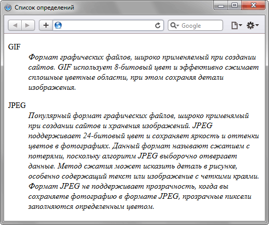

Тег < dt > входит в тройку элементов < dl >, < dt >, < dd >, предназначенных для создания списка определений. Каждый такой список начинается с
контейнера < dl >, куда входит тег < dd > создающий термин и тег < dd > задающий определение этого термина . Тем не менее , хорошим стилем является закрывать все
теги.
< dl >
< dt >Термин 1 < /dt >
< dd >Определение термина 1 < /dd >
< dt > Термин 2 < /dt >
< dd > Определение термина 2 </dd >
< /dl >
